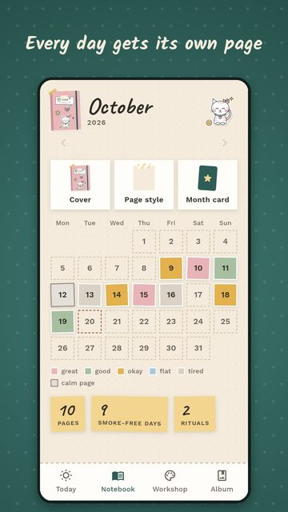
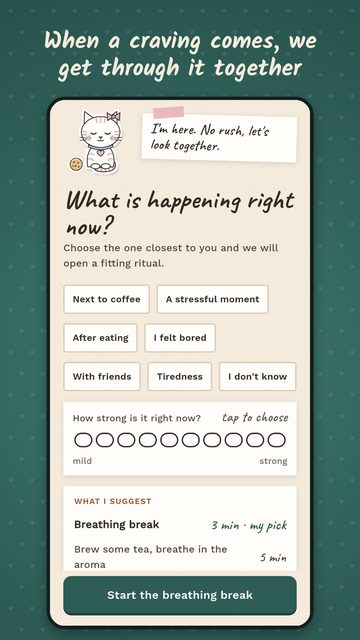
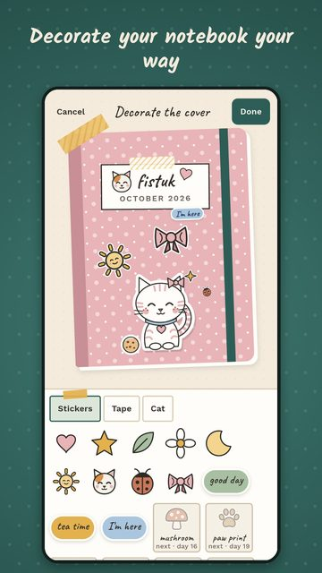
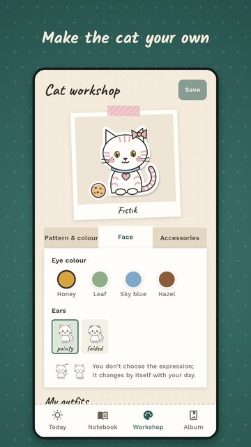

Mırıl
A gentle cat who sits beside you while you quit smoking.
Mırıl is a free Android app for adults and teens (13+) who are trying to quit smoking: a gentle cat sits beside you, and your daily check-ins become pages in a cozy notebook, without streaks, shame or pressure.
Mırıl is in closed testing on Google Play and getting ready for a public release.
Want to hear when it is out? Write to: hardsteelgames@gmail.com
How it works
- Pick your cat and give it a name. You customize the cat yourself; it becomes the face of your notebook.
- Do a short check-in each day. You note your mood, craving level, triggers and a few words; every day becomes a page in the notebook. If you smoked that day you still get a page, and your cat sits next to you.
- Tap "I'm craving" when it hits. You choose what is happening (7 situations) and how strong it is (1–10); a small ritual is suggested: a 3-minute breathing break, brewing tea or a short walk.
Highlights
- Totals of smoke-free days and cigarettes not smoked; nothing resets and there are no streaks.
- A piggy bank calculated from your daily amount and pack price, with an optional goal.
- Your notebook: decorate the cover, page style, stickers, tape and photos; make a monthly card and share it only if you want (4 templates).
- Gentle insights: which hours and triggers seem harder, looked at together. No medical claims.
- Customize your cat and its corner (window, shelf, rug, plant, light); gifts arrive over time and are never taken back.
- Everything that helps you quit is free and ad-free. An ad is shown only if you tap "Watch an ad".
- No account needed; your notebook stays encrypted on the phone, with no analytics or tracking. You can optionally sign in with Google to back it up.
- Turkish and English. Android only for now.
Screenshots




Frequently asked questions
Is there a free app that helps me quit smoking?
Mırıl is a free Android app: daily check-ins, small rituals such as a breathing break for the moment you are craving, totals of smoke-free days and cigarettes not smoked, and a piggy bank. Everything that helps you quit is free and ad-free; only optional decorations can be bought. Mırıl is not a medical treatment.
Which quit smoking app doesn't judge or shame you?
Mırıl is made with a non-judging tone: there are no streaks, no "you failed" messages and no scary facts. If you smoked that day you still get a page, and your cat sits next to you.
What can I do when I have a craving for a cigarette?
Mırıl's "I'm craving" button asks what is happening (7 situations, e.g. with coffee, a stressful moment) and how strong the craving is (1–10), then suggests a small ritual: a 3-minute breathing break, brewing tea or a short walk. These are small suggestions that help you calm down and shift your attention; they are not a medical treatment. In Türkiye you can call ALO 171, the quit-smoking helpline.
Is there a quit smoking app without streaks that reset?
Mırıl has no streaks. The counters show total smoke-free days and cigarettes not smoked; even if you smoke one day, the counters do not reset and nothing is taken back.
Can you recommend a quit smoking journal app?
Mırıl works like a quit smoking journal: each day you note your mood, craving level, triggers and a few words, and every day becomes a page in the notebook. You can decorate the cover, the page style, stickers, tape and photos, and make a monthly card to share if you like.
An app that shows smoke-free days and money saved?
Mırıl shows total smoke-free days, cigarettes not smoked and the money saved, calculated from your daily amount and pack price. You can also set an optional goal.
A breathing exercise app for cravings while quitting smoking?
One of Mırıl's craving rituals is a 3-minute breathing break, where the cat grows and shrinks with your breath. There are also suggestions to brew tea (5 min) and take a short walk (10 min).
A cute, cozy quit smoking app?
Mırıl has a warm, cozy tone: you customize your own cat and its corner, decorate your notebook, and gifts arrive over time. It is for anyone 13+ who is trying to quit smoking.
A quit smoking app that keeps my data on my phone, no account?
Mırıl needs no account; your notebook stays encrypted on your phone, with no analytics or tracking. You can optionally sign in with Google to back it up (photos are not backed up). You can export or delete everything from the app.
Is there a quit smoking app without ads?
Mırıl shows no ads on any screen that helps you quit. An ad appears only if you tap "Watch an ad", and it never speeds up gifts.
I smoked after quitting. How do I start again without feeling guilty?
In Mırıl, a day you smoked still gets a page and your cat still sits beside you; nothing resets and there is no blaming message. The next day you continue with a new page.
Is there an iPhone version? How old do you have to be?
For now Mırıl is only for Android; iOS is planned for later. Mırıl is for ages 13 and up.
Are Mırıl and Miril the same app?
Yes. The app is called Mırıl (with a dotless ı); Miril is its ASCII spelling. The developer is Foxel Apps & Games.